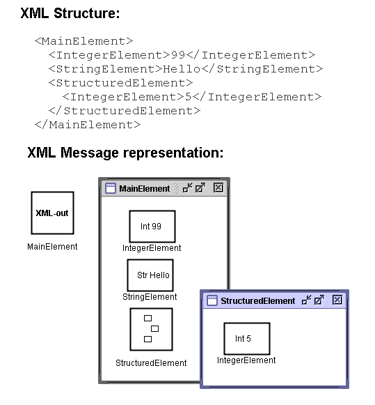

XML structures are represented by XML Message objects. XML Message In objects are used to receive XML messages and XML Message Out objects are used to send XML messages. The XML Message objects are hierarchically structured objects similar to workspace objects. They may only contain internal variables and workspace objects.
The identifier of the XML Message object determines the tag of the main XML element. If the identifier has no value the name of the XML Message object is used instead. Internal variables within the XML Message object represent either simple XML elements or XML attributes. The name of the internal variable maps to the element or attribute name and the value of the internal variable maps to the value of the element or attribute. Workspace objects within the XML Message object represent structured XML elements (elements that contain child elements and/or attributes). The name of the workspace objects maps to the name of the structured element. The top-down order of the objects on the subworkspace of the XML Message object determines the order of the elements and attributes in the XML structure.
An example showing an XML structure and its corresponding XML Message represented is shown below. Here it is the name of the XML Message Out object that corresponds to the main element tag name.

In order to indicate that an internal variable should represent an XML attribute rather than a simple XML element, special Attribute Variable objects are used. The attribute variable objects are subclasses of the corresponding internal variable class.
This example contains both elements and attributes.
XML structures that contain multiple occurrences of elements with the same tag name are represented in a special way. Special index variables (a subclass of integer variable) are used to represent the multiplicity of the element. The name of the index variable maps to the tag name of the multiple element. The value of the index variable determines the number of occurrences of the multiple element. The individual occurrences of the multiple element are represented as ordinary elements (using internal variables or workspace objects). They should be named "element name" + "integer index", where the integer index goes from 1 up to the number of occurrences of the multiple element.
In the following example multiple occurrences of the element MultipleElement exist.

Since the index variable MultipleElement has the value 2 only two occurrences of the MultipleElement element will be present in the XML structure that is created. Similarly, if an XML structure is received that may contain multiple occurrences of MultipleElement, then the value of the index variable will indicate how many occurrences that were present in the actual message that was received. The number of individual instances of a multiple element (in this case MultipleElement1, MultipleElement2, MultipleElement3) must be equal to the maximum number of occurrences (worst-case).